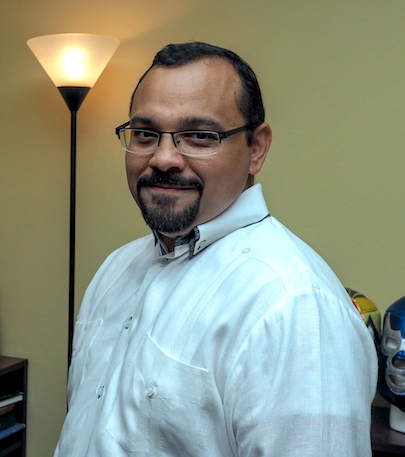

Welcome
Hello everyone! This is an introduction to Visual Media. The purpose of this course as writte in the syllabus is to introduce you to the concepts and skills needed to succeed as producers of media, journalism, public relations, and other communication artifacts. To achieve this goal, you will frequently produce visual and written assignments in this course. In addition, you are expected to become critical consumers of media so that your own media production will be creative, accurate, ethical, and understandable.
Dr. Evia specifically lists out what students will take away from the course:
- How to create effective communication using standard media formats and platforms
- Basic visual design skills for layouts, photography, websites, and video
- How to combine various communication media into a comprehensive and coherent message
- A working knowledge of the Adobe Creative Cloud suite of media software.

Awards and Honors
• Frank R. Smith Award for Distinguished Article in the Journal Technical Communication. May 2017. • Outstanding Faculty Outreach. Virginia Tech College of Liberal Arts and Human Sciences. May, 2011.
Books
“Creating Intelligent Content with Lightweight DITA.” New York, NY: Routledge/Taylor & Francis, Publication date: December 17, 2018.
Professional Activities
• Lightweight DITA Subcommittee • Darwin Information Typing Architecture Technical Committee • Society for Technical Communication • Virginia Tech Center for Human-Computer Interaction • Virginia Tech Hispanic/Latino Faculty and Staff Caucus
Expertise
• Technical and Professional Communication • User Assistance • Structured Authoring • Content Strategy • Workplace Safety Communication
Research
• Technical and Professional Communication • User Assistance • Structured Authoring • Content Strategy • Workplace Safety Communication
Education
I received my Ph.D. in Technical Communication and Rhetoric from the Department of English at Texas Tech University in May 2004. I also hold a Master's in Computer Systems from Universidad La Salle, in Mexico City, and a B.A. in Communication from the Instituto de Ciencias Sociales de Mérida (ICSMAC), in Yucatan, Mexico.
Office and Contact Information
I 153 Shanks Hall I 181 Turner St. NW I Blacksburg, VA 24061 I Phone: (540) 200-8201 I Email: carlos.evia@vt.edu I